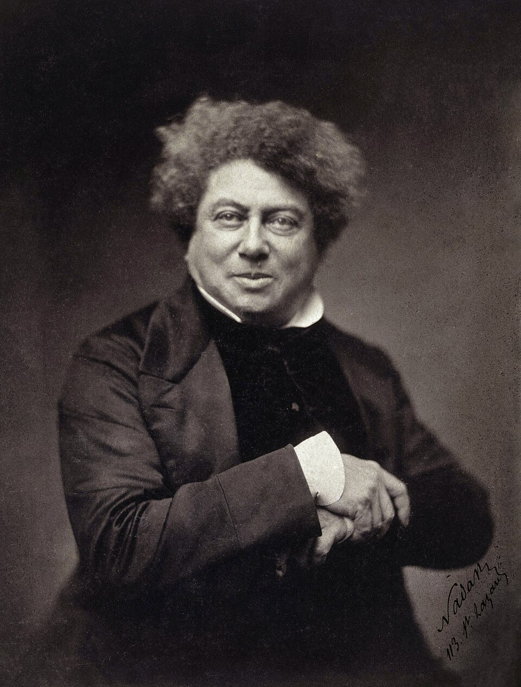

Alexandre Dumas
Ystävyys kantaa keskellä juonia ja vaaroja.
Dumas rakentaa seikkailuja, joissa vauhdikas toiminta, nokkela keskustelu ja historialliset valtakamppailut kohtaavat.
Etsi teokset kirjastostaElämä ja teokset
Alexandre Dumas syntyi Villers-Cotterêts’ssa ja aloitti kirjallisen menestyksensä näytelmillä. Häntä kutsutaan myös vanhemmaksi Dumas’ksi erotukseksi samannimisestä kirjailijapojastaan.
Kolme muskettisoturia ilmestyi vuonna 1844. Sen ja useiden muiden romaanien syntyyn osallistui Auguste Maquet, joka työsti historiallista aineistoa ja luonnoksia. Dumas kehitti tekstejä edelleen omalla kerronnallaan ja vuoropuheluillaan.
Tyyli ja teemat
Luvut päättyvät usein tilanteeseen, josta on vaikea irrottautua. Seikkailun kepeys ja uskollisuuden vakavat vaatimukset vuorottelevat. Henkilöiden nokkeluus näkyy yhtä paljon puheessa kuin miekkailussa, ja yksityiset lupaukset sotkeutuvat valtiollisiin juoniin.
Ystävyys · Kunnia · Seikkailu
Aloita tästä
Kolme muskettisoturia
Nuori d’Artagnan saapuu Pariisiin ja löytää Athoksesta, Porthoksesta ja Aramiksesta liittolaiset. Ystävyys joutuu koetukselle hovin juonissa.
Tarkkaile, milloin henkilöt toimivat kunnian, milloin ystävyyden ja milloin oman etunsa vuoksi.